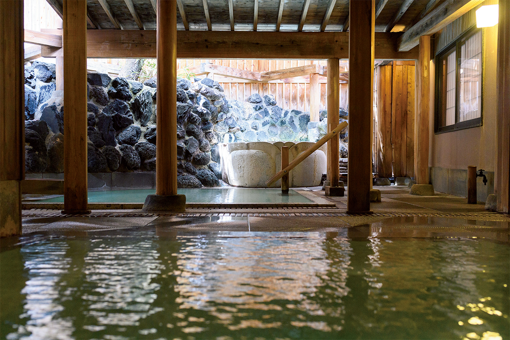
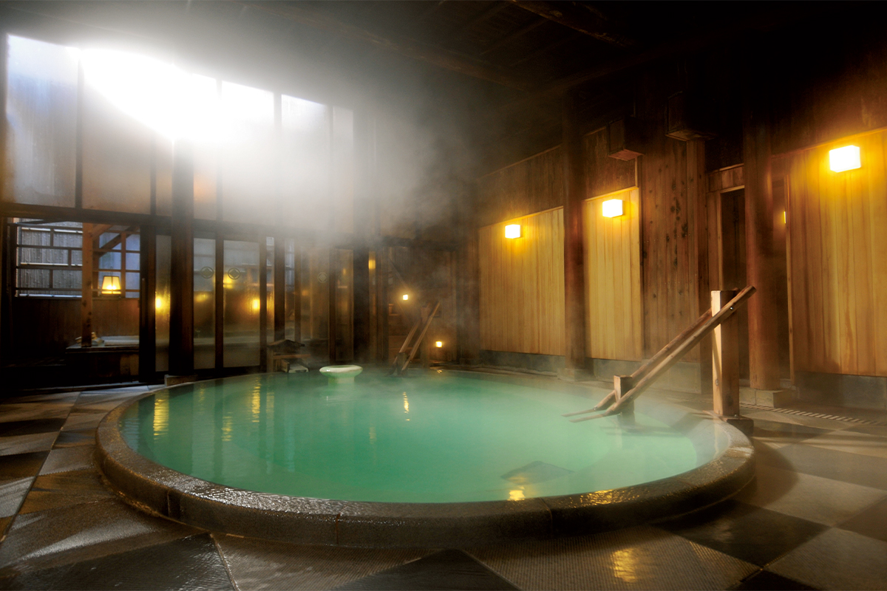
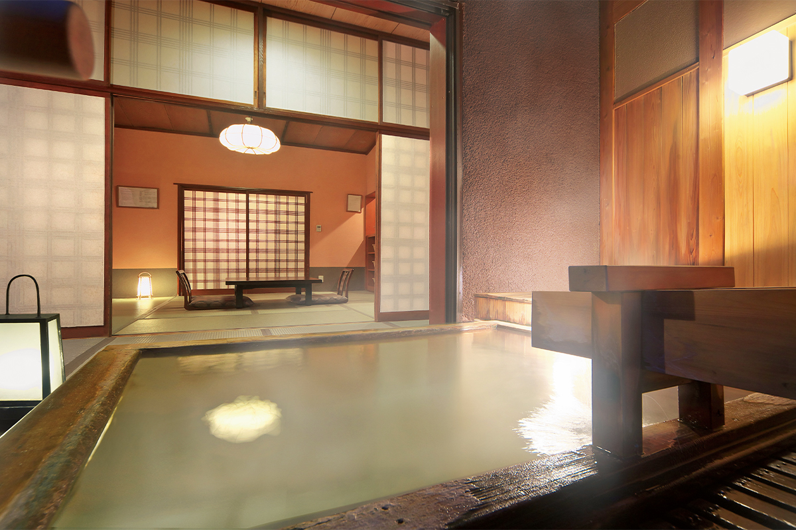
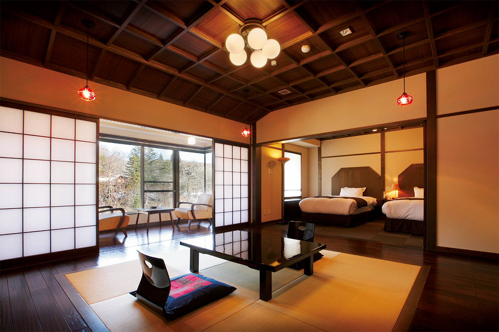
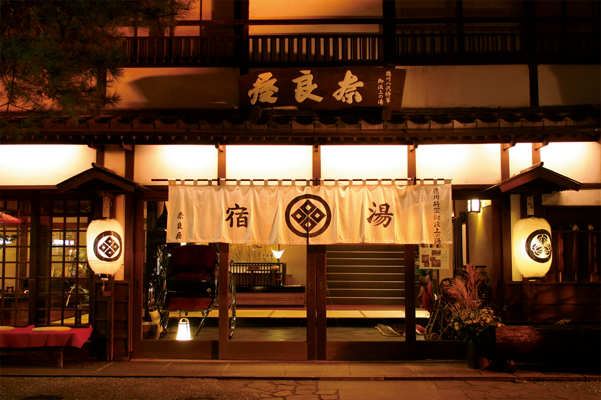

Префектура Гумма · Кусацу · онсэн
Рёкан «Нарая» в Кусацу: самый старый источник, которому дают отдохнуть ночь

Одни онсэны успокаивают, другие будят. Вода Кусацу из второй группы: кислая, с запахом серы, она разгоняет кровь и снимает усталость. В рёкане «Нарая» эту воду из старейшего источника городка ещё и смягчают руками.
Вода
Источник, который выдерживают ночь
Кусацу, онсэн-городок на северо-западе префектуры Гумма, собран вокруг юбатакэ, поля горячих источников в центре городка. Рёкан «Нарая» находится в минуте ходьбы от него. Исследовательница онсэнов, которая выбрала этот рёкан в 2022 году, отнесла его к онсэнам «для бодрости»: туда едут, чтобы вернуть силы.
В «Нарая» идёт вода источника Сирахата, самого старого в Кусацу. Сам источник бьёт из земли за юбатакэ, и на него можно посмотреть: резкий запах серы, вода бурлит, будто кипит. В общественной купальне эта вода показалась исследовательнице колючей, а в рёкане её удивила густая, мягкая вода. Секрет в том, что здесь с ней делают.
Источник спускается к рёкану самотёком, по естественному уклону, и ночь отстаивается в резервуаре в банном домике на территории. За это время вода с 55–56 °C остывает до 46–47 °C. Дальше за дело берётся юмори, хранитель купален: он подбирает температуру, меняя напор воды из трубы, и долго перемешивает купель большим деревянным веслом. Такое перемешивание называют юмоми. После такой ручной работы вода становится шелковистой.

По составу это кислая серная вода с алюминием, сульфатами и хлоридами. Она усиливает кровоток и бодрит кожу и тело. Молочно-зелёная вода, запах серы, и кажется, что кровь начинает бежать по всему телу, а усталость уходит сама собой.

Рёкан
Суши у стола и номер с гостиной
Ужин здесь не менее важен, чем купальни. Его подают в отдельных комнатах столовой, и в каждую приходит повар, чтобы прямо при гостях лепить суши.

Номера очень разные, есть и рассчитанные на одного гостя. Рёкан стоит в минуте от юбатакэ, поэтому вечером удобно выйти к нему на прогулку.

Рёкан «Нарая»
- Адрес
- префектура Гумма, уезд Агацума, Кусацу, Кусацу, 396
- Телефон
- +81 279-88-2311
- Цены / Вход
- ночлег с ужином и завтраком от 29 150 иен (с налогом и сервисным сбором, 2022)
- Заезд / выезд
- 14:00 / 11:00
- Часы работы
- купание без ночлега 12:30–14:00 (последний вход 13:30)
- Выходные
- нерегулярно
- Как добраться
- от станции Наганохара-Кусацугути (JR) автобусом около 25 минут до автостанции Кусацу-онсэн, оттуда пешком рядом; на машине около 1 часа 30 минут от развязки Сибукава-Икахо скоростной дороги Канэцу
Вода: кислая серная вода с алюминием, сульфатами и хлоридами, 50 °C у источника, прозрачная; без подогрева, без добавления воды, проточная. Купальни: в большой купальне 2 внутренние купели в мужской половине и 4 в женской, по одной открытой купели в каждой половине. Ужин: кайсэки в столовой, завтрак: японский. Wi-Fi во всём здании, можно остановиться одному.